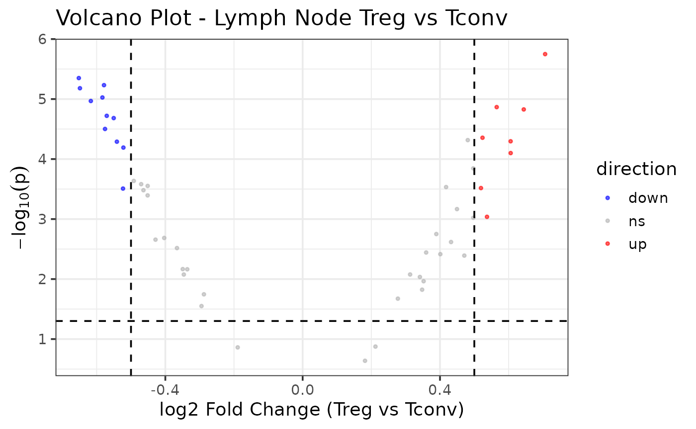

Designed for RNA-seq workflows, JW26ADS8192 provides a streamlined pipeline to differential expression results. Use a SummarizedExperiment object through the R package interface
Step 2: Load the following libraries & example dataset
#Required Libraries
library(JW26ADS8192)
library(ggplot2)
library(SummarizedExperiment)
library(DESeq2)
library(apeglm)
library(stats)
library(rlang)
library(utils)
library(readr)
#example SummarizeExperiment Data Set
data("example_se")Step 3: Start the Differential Gene Expression Analysis
Step 3.1: Determine the Low Expression Filter Threshold
Evaluate model performance across different threshold values and
select the best one.Replace group_var with the column to be
categorized. Default group_var = “cell-type”. Replace
ref_level with a specific cell type to be reference.
Default re_level = “Tconv”. Replace assay_name
with the appropriate label. Default `assay_name = “counts”.
example_se_filtering_assessment <- determine_filter_threshold(
se_ln = example_se,
count_thresholds = c(0, 1, 5, 10, 20, 50, 100, 200, 500),
assay_name = "counts",
ref_level = "Tconv",
group_var = "cell_type",
p_threshold = 0.05
)
example_se_filtering_assessment## threshold n_tested n_significant
## 1 0 50 47
## 2 1 50 47
## 3 5 50 47
## 4 10 50 47
## 5 20 50 47
## 6 50 50 47
## 7 100 50 47
## 8 200 50 47
## 9 500 50 47Step 3.2: Filter Low Expression Genes
Using the threshold value determined in Step 1, manually replace the
min_count_per_gene variable and filter. Use the same SE
utilized in Step 1. Default min_count_per_gene = 10.
Replace assay_name with the appropriate label. Default
`assay_name = “counts”.
se_filtered <- filter_low_exp_genes(
se_ln = example_se,
min_count_per_group = 10,
assay_name = "counts"
)Step 3.3: Differential Gene Expression Analysis via DESeq2
With the remaining filtered genes, preform DESeq2 to analyze the gene
expression. Replace group_var with the column to be
categorized. Default group_var = “cell-type”. Replace
ref_level with a specific cell type to be reference.
Default re_level = “Tconv”
se_dge <- run_DESeq2(
se_ln = se_filtered,
group_var = "cell_type",
ref_level = "Tconv"
)Step 3.4: Apply log2_shrinkage on DESeq2 results to improve estimates.
Replace shrinkage with the appropriate GLM estimator.
Default shrinkage = “apeglm”.
se_dge_shrink <- log2_shrinkage(
dds = se_dge,
shrinkage = "apeglm"
)
se_dge_shrink## baseMean log2FoldChange lfcSE pvalue padj gene
## gene1 148.4587 0.4495101 0.1439740 0.0006820103 0.0012629820 gene1
## gene2 137.6677 0.5369061 0.1829566 0.0009169960 0.0016374929 gene2
## gene3 142.6000 0.2120192 0.1586138 0.1333416729 0.1388975760 gene3
## gene4 151.4552 0.5651548 0.1392639 0.0000136085 0.0000930082 gene4
## gene5 145.1170 0.3479454 0.1601443 0.0150181025 0.0170660255 gene5
## gene6 153.9560 0.2772997 0.1299213 0.0211811995 0.0230230429 gene6Step 3.5: Intrepret the Gene Regulation
Summarize the non-significant and up and down regulated genes in the
data set. Replace p_threshold with the appropriate adjusted
p-value threshold. Default p_threshold = 0.05. Replace
fc_threshold with the appropriate fold-change threshold.
Default fc_threshold = 0.5.
DESeq2_gene_reg_summary <- gene_regulation_summary(
res_df = se_dge_shrink,
p_threshold = 0.05,
fc_threshold = 0.5
)
DESeq2_gene_reg_summary## direction count
## 1 down 11
## 2 ns 31
## 3 up 8Step 3.6: Visualize Expression
Generate a volcano plot to visualize the
gene_reg_summary results. Use the same
p_threshold and fc_threshold values utilized
in Step 5. Replace set_title with the correct title.
Default set_title = “Volcano Plot - Lymph Node Treg vs
Tconv”. Replace xlab with the correct x-axis title. Default
xlab = “log2 Fold Change (Treg vs Tconv)”.
example_se_volcano <- generate_volcano(
res_df = se_dge_shrink,
fc_threshold = 0.5,
xlab = "log2 Fold Change (Treg vs Tconv)",
set_title = "Volcano Plot - Lymph Node Treg vs Tconv",
p_threshold = 0.05
)
example_se_volcano
Step 3.7: Export Results
Export the se_dge_shrink, DESeq2_gene_reg_summary, example_se_filtering_assessment data frames as TSV tables and volcano plots as a PDF and PNG images. Outputs will export as “de_output” to current working directory unless explicitly indicated.
example_se_exports <- export_outputs(
res_df = se_dge_shrink,
summary_df = DESeq2_gene_reg_summary,
filtering_diag = example_se_filtering_assessment,
volcano = example_se_volcano,
output_dir = file.path(tempdir(), "de_output")
)